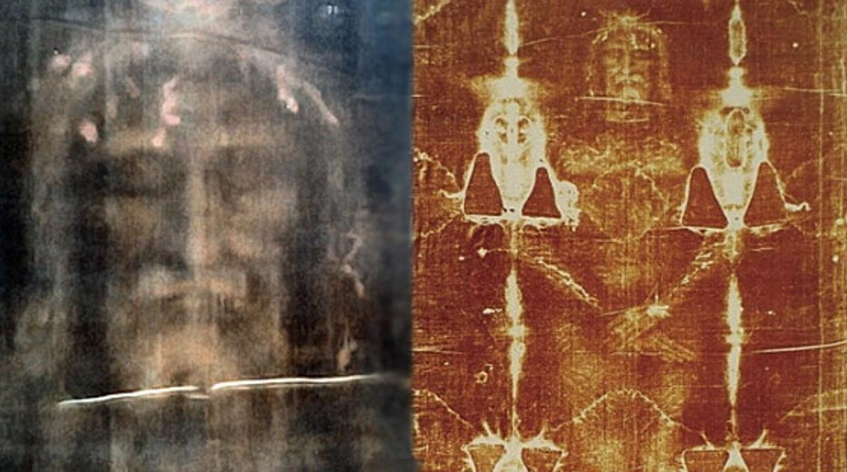

El Arte de Resolver Problemas con Código
Pues a mí, sinceramente, me gusta mucho programar, especialmente lo relacionado con la solución de problemas y aplicaciones en general. Por ejemplo, las tareas que me dejan en taller no las siento como una tarea, sino más como un pasatiempo, porque taller, objetivamente como clase, no me aburre para nada y es la que más disfruto. En mis ratos libres estudio o veo documentación cuando me aburro de jugar para seguir mejorando. Pero claro, no todo es de color de rosa. A mí no se me da muy bien, que digamos, cualquier cosa que esté relacionada con gráficos o diseño, porque ahí sí no doy ni una. Sin embargo, en la programación de back-end soy muy bueno, y a pesar de los errores y el tiempo que pase en un solo error, es lo que más disfruto. Cuando programo lógica no siento el tiempo; es casi como cuando estoy jugando o haciendo otras cosas que me gustan. Simplemente me gusta. Todo esto se lo debo a un proyecto de programación que nos dejaron en cuarto de primaria de desarrollo de juegos básicos en GodotEngine, y desde entonces no he parado. Mi lenguaje favorito es Java, porque crecí y aprendí mucho haciendo data packs y mods para Minecraft, el cual usa Java para ejecutarse.
El Anime/Manga
Pues, como lo digo, en este mundo no se entra solo, se entra por recomendación, y pues así me pasó. Mi mejor amigo desde preprimaria le gustaba mucho eso, y yo no entendía muy bien nada de anime. Unos 3 o 4 años después, él me dijo que mirara una serie en Netflix (en ese tiempo no sabía que era anime, pensé: "es una serie animada"). Todo bien, me gustó, y ya entendía de todo lo que me hablaba. Mi primer anime por cuenta propia que vi fue "Evangelion", pero el primero de todos fue "Full Metal Alchemist Brotherhood y Blue Exorcist". Desde esos momentos no he parado, y no cansa porque las series tienen buenas tramas y desarrollo de personajes. A mí me dicen que me concentro demasiado analizando la serie, pero es algo inconsciente, y siento que se disfruta más. El anime, originario de Japón y conocido como animación japonesa, destaca por su profundidad en las historias y su creatividad visual. Y pues, como todo buen programador, si veo anime.
Explorando la Teología desde una Perspectiva Objetiva
Yo soy evangélico y sí creo en Dios, pero no sé cómo explicarlo. En la religión católica me atrae mucho la teología, que es el estudio del cristianismo, sus bases y todo lo relacionado. Por ejemplo, me interesan temas como la jerarquía de los ángeles, las categorías, las reliquias y sus contextos históricos. Un caso que recuerdo es el de los fragmentos de la cruz de Cristo, que, según la tradición, fueron repartidos por el mundo. Una ubicación que se menciona es Brasil. También me intrigan todos los misterios detrás de estas reliquias.Sin embargo, el tema que más me llama la atención es la rama de la demonología y el exorcismo. La demonología, dentro del contexto cristiano, es el estudio de los demonios y su lugar en la teología. El exorcismo, por otro lado, es un ritual utilizado para expulsar presencias malignas. No sé exactamente por qué me atraen estos temas, pero disfruto aprender sobre ellos. Nunca había reflexionado sobre esto hasta ahora que lo escribo, pero simplemente me interesa mucho su estudio desde un punto de vista objetivo y respetando la religión católica.
